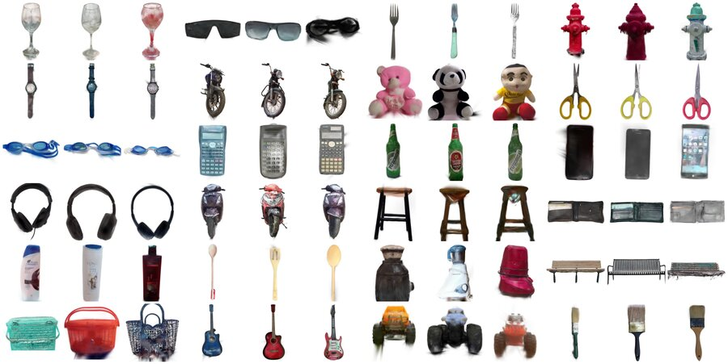

Every9D-21M: Large-Scale Real-World 9D Canonicalization of Everyday Objects
arXiv preprint, 2026
A dataset of 9D pose labels for 21.8M real-world images from 109K object-centric videos across 700 everyday categories, about two orders of magnitude larger than earlier real-world 9D pose benchmarks. Canonical poses are propagated from a small manually annotated reference set and verified from multiple views.